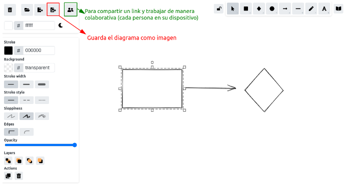

Clase 2 - Modelos de datos
Objetivos de Aprendizaje
Definir Ciencia de Datos, Minería de Datos, Aprendizaje Automático, Inteligencia Artificial y Big Data.
Definir base de datos.
Describir al menos tres problemas que tienen los archivos de textos que son resueltos por las bases de datos.
Definir base de datos relacional.
Definir Entidad, Relación, Atributo y Dominio.
Identificar Entidades, Relaciones, Atributos y Dominios.
Analizar y leer Modelos de Entidad Relación (MER).
Generar Modelos de Entidad Relación.
Slides
Ejercicios
1) Miren el video de esta empresa AgTech que utiliza Ciencia de Datos, discutan en grupo para contestar las siguientes preguntas:
Duración: ~8 minutos
Video: (2:00 minutos) Conocé kilimo
Charlar en grupo para contestar estas preguntas (8 minutos):
¿Cuál es el servicio que brindan?
¿Pueden identificar las 3 Vs del BigData en este servicio? mencione como está representada y porqué.
¿Les parece que el servicio es exitoso?, ¿Por qué?
2) Miren el video de esta municipalidad que utiliza Ciencia de Datos, discutan en grupo para contestar las siguientes preguntas:
Duración: ~8 minutos
Video: (2:30 minutos)Manos en la Data
Charlar en grupo para contestar estas preguntas (7:30 minutos):
¿Sobre qué servicio trabajaron?
¿Qué tecnologías relacionadas con Ciencia de Datos se mencionan en el video?
¿Qué datos utilizan?, Identifiquen algunas de las dimensiones que vimos en la teoría.
¿Pueden identificar las 3 Vs del BigData en este servicio? mencione como está representada.
3) Miren este videos sobre transacciones ACID en Base de Datos y contesten en grupo las preguntas:
Duración: ~15 minutos
Video 1: (5:11 minutos) ACID Transactions: Fundamentos de bases de datos
Para trabajar en grupos: definan con sus palabras que significan cada una de las letras de ACID (5 minutos)
A:
C:
I:
D:
¿Cómo se relacionan estas cualidades con los problemas mencionados con los sistemas de archivos?
4) A partir del análisis de este conjunto de datos, generen el diagrama de Entidad-Relación:
Duración: ~15 minutos
Miren el conjunto de datos que le corresponde a su grupo (Revisar: Listado de bases de datos).
A partir del análisis de este conjunto de datos, dibujen el Diagrama Entidad-Relación correspondiente.
Pueden realizar este ejercicio de dos maneras:
Una persona comparte la pantalla y dibuja el diagrama que se discute con el resto del grupo.
Comparten el link entre todes para que puedan editar el diagrama en conjunto.
Usen esta herramienta para dibujar el diagrama: https://excalidraw.com

Luego coloquen el diagrama en este documento. Pueden exportarlo como imágen e insertarlo en el documento.
3) Definir el dominio de cada atributo completando la siguiente tabla:
| Nombre atributo | Tipo | Rango de valores válidos |
Esta es una plantilla del documento compartido en google docs. Se debe generar un archivo por cada grupo. Se recomienda que los grupos tengan entre dos y cuatro personas.
Listado de base de datos
- Grupo 1
Clima: Datos meteorológicos horarios para las estaciones en aeropuertos: LGA, JFK y EWR.
- Grupo 2
Vehículos: Datos de economía de combustible de la Agencia de Protección Medioambiental (EPA) de EE.UU., 1985-2015. Contiene una selección de variables y no considera vehículos con datos incompletos.
- Grupo 3
Pinguinos: Medidas de tamaño de pingüinos adultos en busca de comida cerca de la estación Palmer en la Antártica.
- Grupo 4
Aeropuertos: Información general (nombre, localización, zona horaria) sobre aeropuertos.
- Grupo 5
Bateadores: Estadísticas de bateadores de beisbol.
- Grupo 6
Aviones: Datos de los aviones y sus códigos de cola en el registro de aviación de la FAA. American Airways (AA) y Envoy Air (MQ) reportan número de flota en lugar de número de cola, por lo que no es posible trazarlos.
- Grupo 7
Personas: Nombres de jugadores de beisbol, fecha de nacimiento e información bibliográfica.
- Grupo 8
Encuesta: Muestra de variables categóricas de la Encuesta Social General de EE.UU.
- Grupo 9
Millas: Este conjunto de datos contiene un subconjunto de los datos de economía de combustible que la Agencia de Protección Medioambiental (EPA) pone a disposición en http://fueleconomy.gov. Contiene solo modelos que tuvieron una nueva versión cada año entre 1999 y 2008, lo que fue utilizado como un proxy de la popularidad del modelo.
- Grupo 10
Gapminder: Extracto de datos de Gapminder sobre expectativa de vida, PIB per cápita y población, según país.
Este listado de conjunto de datos están disponibles con licencia de uso abierta en paquetes de R que luego se pueden utilizar en las clases de R.
Se puede generar un listado de conjuntos de datos con temas más cercanos a tus estudiantes y con variables y entidades en su idioma nativo.
Lecturas sugeridas
- Modulos 1 y 2 del libro Bases de datos. Rafael Camps Paré, Luis Alberto Casillas Santillán, Dolors Costal Costa, Marc Gibert Ginestà, Carme Martín Escofet, Oscar Pérez Mora. ISBN: 84-9788-269-5.